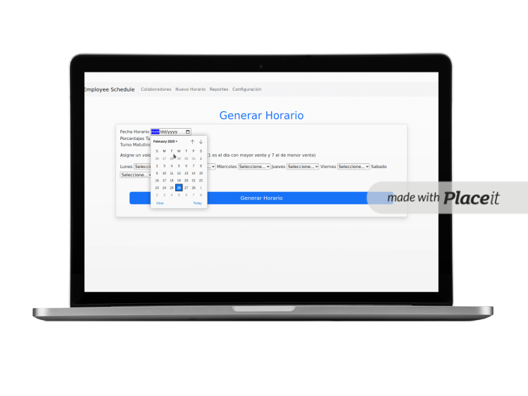

Este proyecto es una aplicación web diseñada para la gestión de empleados y la generación de horarios semanales.
Permite a los administradores gestionar empleados mediante un sistema CRUD (Crear, Leer, Actualizar, Eliminar)
y generar dinámicamente horarios para una semana seleccionada.
Tecnologías Utilizadas:
- Backend: Python con Flask
- Frontend: HTML con plantillas de Bootstrap
- Base de Datos: MySQL
- Manejo y Visualización de Datos: Pandas y DataTables
Características Principales:
- Gestión de Empleados: Agregar, editar y eliminar empleados en la base de datos.
- Generación de Horarios: Crear y mostrar horarios semanales de turnos de manera dinámica.
- Análisis y Visualización de Datos: Uso de Pandas para procesar y presentar la información generada.
- Interfaz Amigable: Diseño responsivo con Bootstrap para una mejor experiencia de usuario.
Este proyecto demuestra mi experiencia en desarrollo backend con Flask, manipulación de datos con Pandas
y gestión de bases de datos, combinando funcionalidad y diseño para optimizar la administración de empleados.